2 Эксплуатационная часть
Эксплуатационная часть описывает настройку оборудования, IP-адресацию, конфигурацию VLAN и сетевых сервисов, обеспечивающих функционирование спроектированной сети.
2.1 Таблица VLAN
Таблица 2.1 — Список VLAN
| VLAN ID | Имя | Подсеть B1 | Подсеть B2 | Назначение |
|---|---|---|---|---|
| 100 | SERVERS | 192.168.30.0/28 | 192.168.130.0/28 | Серверный сегмент |
| 200 | USERS | 192.168.40.0/27 | 192.168.140.0/27 | Пользователи |
| 300 | CCTV | 192.168.60.0/28 | 192.168.160.0/28 | Видеонаблюдение |
| 400 | DMZ | 192.168.10.0/28 | 192.168.110.0/28 | Публичные сервисы |
| 999 | MGMT | 192.168.99.0/29 | 192.168.199.0/29 | Управление сетью |
2.2 IP-адресация
Таблица 2.2 — Распределение IP-адресов
| Устройство / сегмент | B1 | B2 |
|---|---|---|
| SWM ↔ ASA inside | 10.255.1.2/30 | 10.255.2.2/30 |
| ASA inside | 10.255.1.1/30 | 10.255.2.1/30 |
| R ↔ ASA outside | 172.16.1.1/28 | 172.16.2.1/28 |
| WAN ↔ ISP | 100.64.1.2/30 | 100.64.2.2/30 |
| SVI VLAN 100 (Servers) | 192.168.30.1 | 192.168.130.1 |
| SVI VLAN 200 (Users) | 192.168.40.1 | 192.168.140.1 |
| SVI VLAN 300 (CCTV) | 192.168.60.1 | 192.168.160.1 |
| SVI VLAN 999 (MGMT) | 192.168.99.1 | 192.168.199.1 |
2.3 Назначение портов SWM (B1)
Таблица 2.3 — Распределение портов центрального коммутатора
| Интерфейс | Подключение | Режим | VLAN |
|---|---|---|---|
| Fa0/1 | Сервер s1 (DHCP/DNS/NTP) | access | 100 |
| Fa0/3 – Fa0/10 | Серверы s2 – s9 | access | 100 |
| Fa0/2 | Администраторский ПК c23 | access | 999 |
| Gi0/1 | Trunk к SW1 (пользователи) | trunk | 100,200,999 |
| Gi0/2 | Trunk к SW2 (CCTV) | trunk | 300,999 |
| Fa0/24 | Uplink к FW1 (inside) | routed | — |
2.4 Конфигурация центрального коммутатора (фрагмент)
hostname B1-SWM1
ip routing
vlan 100
name SERVERS
vlan 200
name USERS
vlan 300
name CCTV
vlan 999
name MGMT
interface vlan 100
ip address 192.168.30.1 255.255.255.240
interface vlan 200
ip address 192.168.40.1 255.255.255.224
ip helper-address 192.168.30.2
interface vlan 300
ip address 192.168.60.1 255.255.255.240
spanning-tree mode pvst
spanning-tree vlan 100,200,300,999 root primary
ip route 0.0.0.0 0.0.0.0 10.255.1.1
2.4 Конфигурация устройств (скриншоты)
Ниже приведены скриншоты настройки активного оборудования сети: маршрутизатора, межсетевого экрана и коммутаторов B1.
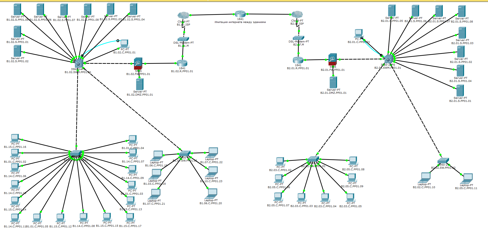
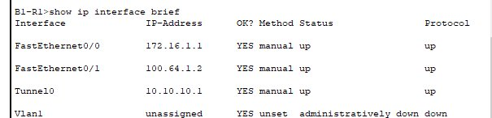
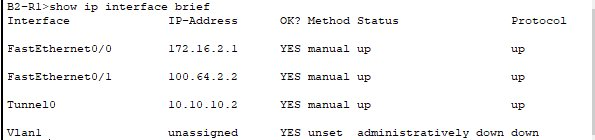
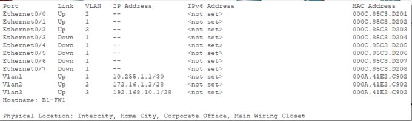
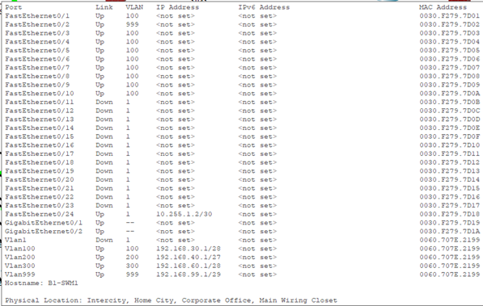
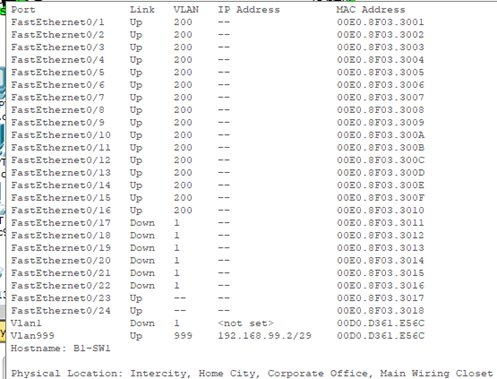
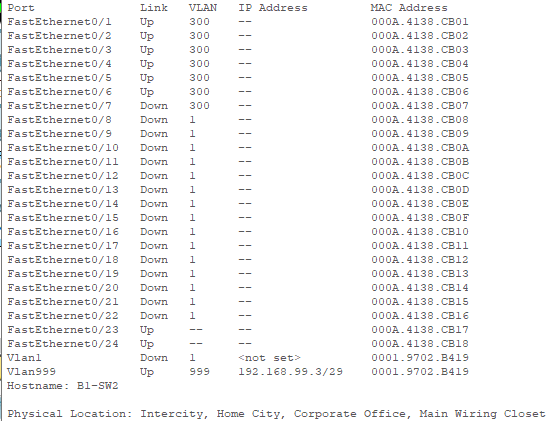
2.5 Настройка сетевых сервисов (скриншоты)
Ниже приведены скриншоты настройки серверных служб: DHCP, DNS, NTP, TFTP, FTP, HTTP и Email.
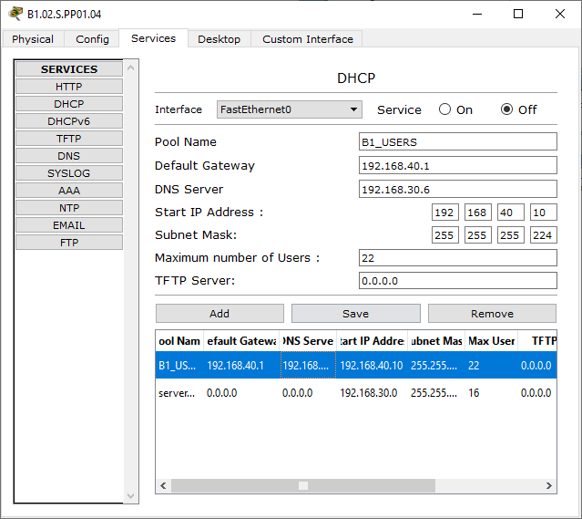
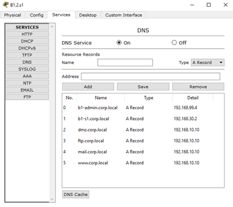
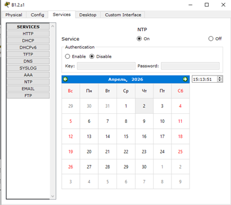
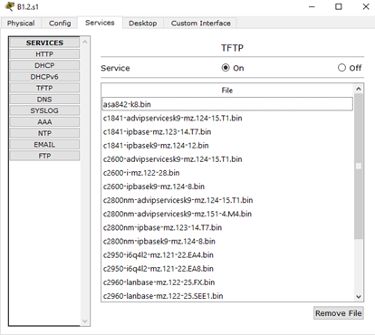
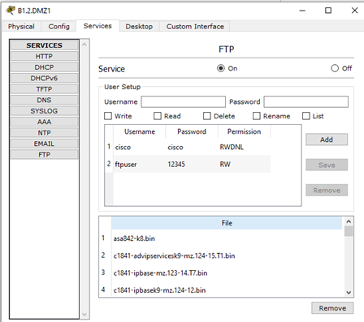
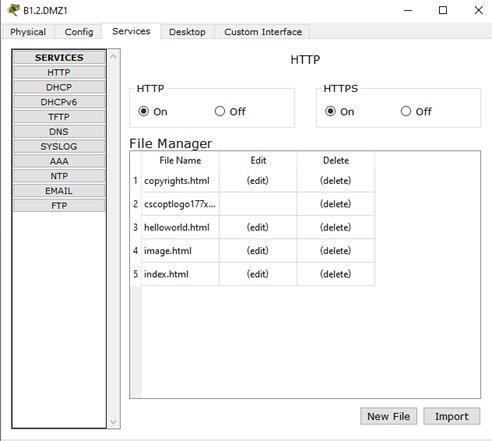
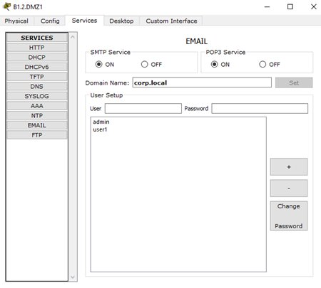
2.6 Команды проверки
Для проверки работоспособности применяются команды: show vlan brief, show interfaces trunk, show ip interface brief, show spanning-tree, show ip route, show running-config.